Летняя школаВ 2018 году пройдут 3 летние школы программирования в формате выездного лагеря в 90 км от Москвы. Школа базируется на проектном подходе и интенсивном обучении через практику и прикладные исследования под руководством специалистов из индустрии, возможности пробовать себя в самых передовых технологических областях, экспериментировать, а также получить углубленные знания и опыт работы над реальными задачами. НаправленияВ программе летних школ представлены самые разные направления: алгоритмы и приложения, мобильная и веб-разработка, разработка игр, нейроинтерфейсы, VR/AR, анализ данных и машинное обучение, биоинформатика, распределенные системы, функциональное программирование, информационная безопасность, микроконтроллеры и робототехника, а также направление для начинающих.

ПрограммаВ рамках выбранного направления каждый участник получит возможность пройти интенсивный курсы, реализовать свой проект или решить задачу от партнеров, а также принять участие в традиционном хакатоне на экваторе, пройти спецкурсы и по итогам школы представить свой проект и рассказать о нем на Хабре. Вечером участников лагеря ждут мастер-классы, встречи с партнерами школы и учеными, а также квесты, спорт, костры и общение. GoTo помогает участникам: самостоятельно принимать решения, ставить цели и шаг за шагом достигать их, развить мотивацию к получению новых знаний, расширить кругозор, осознать свои возможности и приобрести уверенность для дальнейшего саморазвития, научиться работать в команде, завести новых друзей и единомышленников. |
Школьники 7-11 класса
и студенты 1-2 курса
Подача заявки на участие
и тест
Стоимость участия
52 000 рублей
Возможность выиграть
гранты в конкурсах
Проекты |
Прикладные задачи |
Сообщество |
Междисциплинарность |
Эксперты |
Неформальная |
В рамках направления прикладного программирования по итогам собеседования и теста
формируется 2 группы.
Первую группу ждет интенсив погружения в несколько областей:
мобильная и веб-разработка, базы данных, сети, анализ данных и применение алгоритмов в
прикладных задачах. Вся необходимая теория дается индивидуально и непосредственно в процессе
работы над небольшими проектами.
Более опытные участники все время посвятят реализации основного проекта в рамках задачи от
компании-партнера или на основе своей идеи. Каждая команда в первый же день познакомится со
своим куратором и начнет работу по индивидуальному плану на 2 недели, эпизодически
отвлекаясь на спецкурсы, мастер-классы и традиционный хакатон на экваторе.
Помимо ежедневной работы над проектами под руководством кураторов всех участников ждут как
технологические мастер-классы, так и семинары по организации работы в проекте, формированию
ТЗ и исследованию требований от пользователей, тестированию.
Участники направления робототехники будут разделены на 2 группы. Опытные ребята возьмутся сразу за проекты на основе своих или предложенных кураторами идей и пройдут все стадии – от идеи до реализации и презентации результатов. Проектантов ждет полноценная исследовательская работа по ряду аспектов популярных «железных» направлений: от связи с использованием BLE и Wi-Fi до решения задач распознавания образов, от организации пула девайсов в рамках «интернета вещей» до разработки API и протоколов сопряжения самых разных устройств. Конечно же, не обойдется без 3D-проектирования и печати. Работа с движками, датчиками и уверенное программирование на C/C++ – подразумеваются по умолчанию. Новичков в работе с железом в первые дни школы ждет интенсивный вводный курс для получения специфичных направлению базовых навыков и знаний: участники поработают с Arduino, средой разработки и различными датчиками, микросхемами и сервомоторами. После прохождения КМБ и «огневого рубежа» — зачета по базовым знаниям — группа присоединится к проектникам и перейдет к реализации своей задачи в виде умного устройства. Таким образом, каждый участник направления получит к концу школы результат в виде законченного устройства, а также пройдет серию мастер-классов по проектной работе, электронике, промдизайну и 3D-печати, интернету вещей и др.
В базовом треке направления участники познакомятся с основными
алгоритмами машинного обучения для задач классификации и
регрессии, методами предобработки данных и оценки качества решений.В программе: линейные
модели, KNN, дерево решений, случайный лес, градиентный бустинг, ансамбли, матричные
разложения
для понижения размерности, t-SNE, алгоритмы кластеризации, полносвязные, сверточные и
рекуррентные нейронные сети.
Практические задания включают в себя применение изученных
алгоритмов к реальным данным и участие в соревнованиях по машинному обучению на Kaggle.
В проектном треке участники реализуют свои идеи или задачи от компаний-партнеров по
самым разным направлениям: от рекомендательных систем и NLP до компьютерного зрения и других
элементов искусственного интеллекта, а также изучают более узкие темы, например,
reinforcement learning, generative adversarial networks и т.п.
Подробнее
Современная биология далека от скучного предмета, который преподают сегодня в школах. С развитием технологий появилась возможность определять уровни активности генов отдельных клеток, определять пространственную структуру белков, считывать активность нервных клеток – у биологов появилось огромное количество данных, что привело к бурному развитию биоинформатики. Биоинформатика – наука, занимающаяся поиском новых закономерностей в биологических данных с помощью алгоритмических и статистических методов и проектированием систем принятия решений на их основе. В рамках школы участники познакомятся с основными биоинформатическими задачами, получат опыт работы с реальными данными, изучат результаты современных исследований и их применение в медицине, экологии и сельском хозяйстве. Желающие смогут реализовать собственный проект под руководством ученых из ведущих академических и индустриальных лабораторий. К участию приглашаются все, кто имеет опыт в анализе данных, прикладном программировании или алгоритмах и хочет выйти за пределы бесконечных веб-сайтов, кредитных скорингов и прочих таргетингов – попробуйте себя в междисциплинарной области. Биологию знать не обязательно, мы вам всё покажем и расскажем. Также приглашаем биологов, которые хотят применять программирование и анализ данных для своих задач.
Изучение алгоритмов – основа подготовки специалиста Computer Science.
Разработка любой современной системы состоит из двух частей: бизнес-логика и
инфраструктурный код. Инфраструктурный код приходится писать всегда и вне зависимости от
условной простоты приложения, однако реализация алгоритмической части системы требует более
фундаментальной подготовки.
С другой стороны, знания алгоритмов точно пригодятся для выступлений на олимпиадах по
программированию и успешного поступления в сильнейшие технические университеты, и для
успешного прохождения собеседований в технологические компании, и для развития
соответствующего мышления, которое пригодится в любой области.
На направлении участники в деталях познакомятся с каждым из вышеперчисленных аспектов:
теоретическими знаниями для олимпиад и практическими приложениями алгоритмов в индустрии. Мы
проследим, как одни и те же концепции встречаются в контестах и в практических задачах
поиска информации, оптимизации.
Наиболее опытным участникам будет предложено реализовать проект со значительной
алгоритмической частью.
Подробнее
На направлении распределенных систем участники
смогут пройти интенсивный курс и реализовать проекты в рамках одного из треков:
Кластеры и enterprise. Изучение подходов, которые используются при реализации
высоконагруженных и надежных систем,
существующими архитектурами и их реализациями. Будут рассмотрены практики анализа и хранения
больших данных (HDFS, MapReduce, Spark)
и написания эффективных масштабируемых сервисов (Docker, Kubernetes, концепции
микросервисов, pub-sub queue).
Открытые распределённые системы. Как сделать то, что сможет жить не только в уютном кластере
вашей корпорации, но и в живом интернете?
И не привязано к одному серверу? Как HTML избавился от тегов, работающих только в одном
браузере? Как HTTPS вообще может безопасно работать
для миллиардов пользователей с Windows XP? Как MQTT набрал популярность? И как и зачем на
самом деле децентрализовывают вещи, без ICO и асбеста.
Всё это и менее заезженные кейсы, а также распределение доверия, топологии, шаринг
данных, история подходов к вопросу от двадцатилетней до трёхдневной давности, зачатки
системного мышления и #wefixthenet – ждет участников трека.
Направление для начинающих предназначено для участников, которые имеют мало опыта в программировании и не работали над прикладными задачами. Цель этого курса - заполнить пропасть между изучением программирования и решением реальных промышленных задач. Многие участники наших школ начинают обучение именно с этого направления. Программа обучения – базовый курс прикладного программирования для начинающих в формате последовательной реализации небольших проектов на Python. С одной стороны, это позволит получить много необходимого практического опыта, с другой стороны, любую задачу можно будет впоследствии развить до большого проекта. Занятия проходят в маленькой группе, вся необходимая теория дается индивидуально и непосредственно в процессе работы над проектом. За 2 недели участники поработают с изображениями, звуком, backend-разработкой веб-сервисов, базами данных и API популярных сервисов( VK, Instagram и др.), знакомятся с базовым анализом данных, реализуют Telegram-бота, сайт со своей cms, бота для онлайн-игры.
Участники направления робототехники будут разделены на 2 группы. Опытные ребята возьмутся сразу за проекты на основе своих или предложенных кураторами идей и пройдут все стадии – от идеи до реализации и презентации результатов. Проектантов ждет полноценная исследовательская работа по ряду аспектов популярных «железных» направлений: от связи с использованием BLE и Wi-Fi до решения задач распознавания образов, от организации пула девайсов в рамках «интернета вещей» до разработки API и протоколов сопряжения самых разных устройств. Конечно же, не обойдется без 3D-проектирования и печати. Работа с движками, датчиками и уверенное программирование на C/C++ – подразумеваются по умолчанию. Новичков в работе с железом в первые дни школы ждет интенсивный вводный курс для получения специфичных направлению базовых навыков и знаний: участники поработают с Arduino, средой разработки и различными датчиками, микросхемами и сервомоторами. После прохождения КМБ и «огневого рубежа» — зачета по базовым знаниям — группа присоединится к проектникам и перейдет к реализации своей задачи в виде умного устройства. Таким образом, каждый участник направления получит к концу школы результат в виде законченного устройства, а также пройдет серию мастер-классов по проектной работе, электронике, промдизайну и 3D-печати, интернету вещей и др.
В рамках направления прикладного программирования по итогам собеседования и теста
формируется 2 группы.
Первую группу ждет интенсив погружения в несколько областей:
мобильная и веб-разработка, базы данных, сети, анализ данных и применение алгоритмов в
прикладных задачах. Вся необходимая теория дается индивидуально и непосредственно в процессе
работы над небольшими проектами.
Более опытные участники все время посвятят реализации основного проекта в рамках задачи от
компании-партнера или на основе своей идеи. Каждая команда в первый же день познакомится со
своим куратором и начнет работу по индивидуальному плану на 2 недели, эпизодически
отвлекаясь на спецкурсы, мастер-классы и традиционный хакатон на экваторе.
Помимо ежедневной работы над проектами под руководством кураторов всех участников ждут как
технологические мастер-классы, так и семинары по организации работы в проекте, формированию
ТЗ и исследованию требований от пользователей, тестированию.
Изучение алгоритмов – основа подготовки специалиста Computer Science.
Разработка любой современной системы состоит из двух частей: бизнес-логика и
инфраструктурный код. Инфраструктурный код приходится писать всегда и вне зависимости от
условной простоты приложения, однако реализация алгоритмической части системы требует более
фундаментальной подготовки.
С другой стороны, знания алгоритмов точно пригодятся для выступлений на олимпиадах по
программированию и успешного поступления в сильнейшие технические университеты, и для
успешного прохождения собеседований в технологические компании, и для развития
соответствующего мышления, которое пригодится в любой области.
На направлении участники в деталях познакомятся с каждым из вышеперчисленных аспектов:
теоретическими знаниями для олимпиад и практическими приложениями алгоритмов в индустрии. Мы
проследим, как одни и те же концепции встречаются в контестах и в практических задачах
поиска информации, оптимизации.
Наиболее опытным участникам будет предложено реализовать проект со значительной
алгоритмической частью.
Подробнее
В базовом треке направления участники познакомятся с основными
алгоритмами машинного обучения для задач классификации и
регрессии, методами предобработки данных и оценки качества решений.В программе: линейные
модели, KNN, дерево решений, случайный лес, градиентный бустинг, ансамбли, матричные
разложения
для понижения размерности, t-SNE, алгоритмы кластеризации, полносвязные, сверточные и
рекуррентные нейронные сети.
Практические задания включают в себя применение изученных
алгоритмов к реальным данным и участие в соревнованиях по машинному обучению на Kaggle.
В проектном треке участники реализуют свои идеи или задачи от компаний-партнеров по
самым разным направлениям: от рекомендательных систем и NLP до компьютерного зрения и других
элементов искусственного интеллекта, а также изучают более узкие темы, например,
reinforcement learning, generative adversarial networks и т.п.
Подробнее
Современная биология далека от скучного предмета, который преподают сегодня в школах. С развитием технологий появилась возможность определять уровни активности генов отдельных клеток, определять пространственную структуру белков, считывать активность нервных клеток – у биологов появилось огромное количество данных, что привело к бурному развитию биоинформатики. Биоинформатика – наука, занимающаяся поиском новых закономерностей в биологических данных с помощью алгоритмических и статистических методов и проектированием систем принятия решений на их основе. В рамках школы участники познакомятся с основными биоинформатическими задачами, получат опыт работы с реальными данными, изучат результаты современных исследований и их применение в медицине, экологии и сельском хозяйстве. Желающие смогут реализовать собственный проект под руководством ученых из ведущих академических и индустриальных лабораторий. К участию приглашаются все, кто имеет опыт в анализе данных, прикладном программировании или алгоритмах и хочет выйти за пределы бесконечных веб-сайтов, кредитных скорингов и прочих таргетингов – попробуйте себя в междисциплинарной области. Биологию знать не обязательно, мы вам всё покажем и расскажем. Также приглашаем биологов, которые хотят применять программирование и анализ данных для своих задач.
На направлении распределенных систем участники
смогут пройти интенсивный курс и реализовать проекты в рамках одного из треков:
Кластеры и enterprise. Изучение подходов, которые используются при реализации
высоконагруженных и надежных систем,
существующими архитектурами и их реализациями. Будут рассмотрены практики анализа и хранения
больших данных (HDFS, MapReduce, Spark)
и написания эффективных масштабируемых сервисов (Docker, Kubernetes, концепции
микросервисов, pub-sub queue).
Открытые распределённые системы. Как сделать то, что сможет жить не только в уютном кластере
вашей корпорации, но и в живом интернете?
И не привязано к одному серверу? Как HTML избавился от тегов, работающих только в одном
браузере? Как HTTPS вообще может безопасно работать
для миллиардов пользователей с Windows XP? Как MQTT набрал популярность? И как и зачем на
самом деле децентрализовывают вещи, без ICO и асбеста.
Всё это и менее заезженные кейсы, а также распределение доверия, топологии, шаринг
данных, история подходов к вопросу от двадцатилетней до трёхдневной давности, зачатки
системного мышления и #wefixthenet – ждет участников трека.
Направление для начинающих предназначено для участников, которые имеют мало опыта в программировании и не работали над прикладными задачами. Цель этого курса - заполнить пропасть между изучением программирования и решением реальных промышленных задач. Многие участники наших школ начинают обучение именно с этого направления. Программа обучения – базовый курс прикладного программирования для начинающих в формате последовательной реализации небольших проектов на Python. С одной стороны, это позволит получить много необходимого практического опыта, с другой стороны, любую задачу можно будет впоследствии развить до большого проекта. Занятия проходят в маленькой группе, вся необходимая теория дается индивидуально и непосредственно в процессе работы над проектом. За 2 недели участники поработают с изображениями, звуком, backend-разработкой веб-сервисов, базами данных и API популярных сервисов( VK, Instagram и др.), знакомятся с базовым анализом данных, реализуют Telegram-бота, сайт со своей cms, бота для онлайн-игры. Подробнее
Бессрочные гранты на скидки в размере 20% на участие в школе за успешную реализацию проекта, работа над которым была начата на одной из предыдущих школ. Для получения гранта необходимо завершить работу над проектом по утвержденному куратором плану и опубликовать результаты на Хабре.
Предложите идею проекта для нашей школы и сообщества вокруг, реализуйте ее и получите грант на бесплатное обучение. Критерии оценки проектов: работоспособность прототипа, техническая сложность, масштабируемость и полезность. Если вы полны сил и решимости, мы предоставим куратора для проработки идеи и плана.
Преподаватели и гостиАлексей ПерепёлкинРуководитель направления робототехники GoTo и ЛИОТ МФТИ, автор онлайн-курса на Coursera "Строим роботов на Arduino", автор и судья номинации "Hello, Robot! Arduino" Робофеста, организатор Роболабораторий от КРОК. Иван БибиловРуководитель направления прикладного программирования GoTo, куратор образовательных программ Яндекса, преподаватель различных курсов в университетах и школы анализа данных Яндекса. Надежда ЯнушкевичРуководитель направления поддержки и развития школьного IT-образования компании КРОК, специалист по корпоративной культуре, организатор соревнований, хакатонов и школ. Александр ПанинПреподаватель направления анализа данных в GoTo. Специалист в области машинного обучения, разработчик проектов CERN-Яндекс, преподаватель ФКН ВШЭ и школы анализа данных Яндекса, ЛЭШ. Алексей СаватеевДоктор физико-математических наук, профессор МФТИ. Работает ведущим научным сотрудником в РЭШ и ЦЭМИ. Занимается исследованиями в Яндексе. Александр ПетровПреподаватель направления анализа данных в GoTo. Специалист в области машинного обучения и рекомендательных систем, технический директор E-contenta, руководил R&D-отделом Data-Centric Alliance, работал в Tinkoff, Яндекс и Mail.Ru. Николай КутрухинПреподаватель направления робототехники в GoTo, специалист в области программной инженерии, координатор МКШ, руководитель робототехнических и олимпиадных кружков. Павел КуликовПреподаватель направления прикладного программирования в GoTo, инженер-программист с 10-летним стажем, full stack разработчик, фрилансер. Ростислав БородинПреподаватель направления прикладного программирования в GoTo и Политехническом музее. Выпускник ФКН НИУ ВШЭ, профессиональный full-stack веб-разработчик. Специалист по разработке медицинских сервисов. Ирина ЩукинаПреподаватель направления биоинформатики в GoTo. Выпускник матмеха СПбАУ. Исследователь в Оксфордском университете. Преподаватель в Институте Биоинформатики. Тимофей ПродановПреподаватель направления биоинформатики в GoTo. Выпускник матмеха СПбАУ. Исследователь в Центре Алгоритмической Биотехнологии СПбГУ, преподаватель в Институте Биоинформатики. Михаил ДиченкоПреподаватель направления робототехники в GoTo. Выпускник МГПУ, руководитель инженерного профиля школы ОРТ, преподаватель лицея 1535, руководитель робототехнических кружков в Москве. Алёна ИльинаПредприниматель, основатель школы GoTo, организатор TEDxSadovoeRing, серии научных школ по робототехнике и искусственному интеллекту RAIC для молодых специалистов и других образовательных проектов. Михаил ФуниковAndroid-разработчик (Middle+) в e-Legion. Сфера профессиональных интересов —построение наиболее простой и гибкой архитектуры приложения. Сергей ЮдинПреподаватель направления анализа данных в GoTo. Аспирант МехМата МГУ, специалист в области машинного обучения и математической статистики. Работает аналитиком-разработчиком в Поиске Яндекса. Виктор ПетуховЗакончил магистратуру СПбПУ по направлению Биоинформатика. За время обучения проходил стажировку в Harvard Medical School. Специализируется в области статистиески и машинного обучения. Анастасия Иванова-МосковскаяAспирант и сотрудник факультета журналистики МГУ им. М. В. Ломоносова, координатор школьного отделения мастерской "Школа "Наука и журналистка" проекта "Летняя школа". Дмитрий ВолковХаскелль-разработчик, энтузиаст формальной верификации и Лампортист. Аналитик данных и любитель абстрактного карри. Руководитель направлений функциональное программирование и распределённые системы. |
Партнёры |


Отзывы участников
Андреева Мария
Школа №179, г. Москва
В GoTo какая-то особенная атмосфера в которой даже летом хочется работать и узнавать новое) Я была на нескольких сменах, но пока что попробовала только два направления: робототехнику и анализ данных. На первом мы делали много разных проектов, начиная рисующим роботом, заканчивая умной гантелей. Потом я решила что-нибудь поменять и пошла на направление АДа. Там пока что было только обучение, тк это довольно сложная тема и в ней много чего надо изучить, чтобы делать какие-то стоящие проекты. Очень классно объясняют, если что-то непонятно разбирают по мелочам.
Зайцева Татьяна
Мехмат МГУ, г. Москва
Поездка в GoTo - отличная возможность совместить активный отдых и попробовать себя в интересных проектах, а также познакомиться с ребятами со всей России, у которых горят глаза от того же, что и у тебя. В свою первую смену мы в команде реализовали управляемую оператором тележку с камерой, способную вращаться почти как угодно и так помогать оператору снимать то, что нужно, под правильным углом и освещением, а во вторую я сделала робота, запоминающего свою исходную настроенную траекторию, и потом ездящего по ней даже после выключения питания. Как оказалось, можно всего за одну смену сделать полностью задачу, в чём нам помогали отзывчивые и опытные преподаватели. Мне всё понравилось, а знания с этих смен я использую до сих пор.
Гридасов Илья
МФТИ, г. Магнитогорск
Мне очень понравилось в GoTo. Здесь я написал первое работающее приложение на android. Благодаря данной школе я получил полезный опыт написания проекта, причём делали его я с моим напарником почти самостоятельно, обсуждая идеи и технологии с куратором. Мы кодили приложение, которое выдавало тебе интересный факт, со встроенной рекомендательной системой. Работу мы разделили примерно так, что я занимался back-end-ом и рекомендательной системой, а напарник больше front-end-ом. В итоге, не без трудностей и неудач, мы реализовали работающее готовое приложение, которое можно было выпускать в production, ну почти. Хочется отметить, что здесь также было время на активный отдых, игры в волейбол, футбол многое другое. ... А также несмотря на достаточную погруженность людей в свои проекты, в воздухе царила атмосфера семьи, все обсуждали свои проекты с другими, предлагали новые идеи, а также вместе наслаждались играми и общением по душам, которому значительно способствовали очень сердечные свечки по вечерам. Таким образом, жизнь в GoTo Camp насыщает человека как мыслями, идеями, новыми технологиями, но и эмоциями, конечно, позитивными!
Екатерина Попкова
Биофак МГУ, г. Москва
Весення смена в лагере «GoTo» на специализации «биоинформатика» была для меня очень полезной и интересной. За неделю мы изучили и самостоятельно реализовали несколько базовых алгоритмов, применяющихся в биоинформатике: алгоритм Нидлмана-Вунша для выравнивания последовательностей, алгоритм восстановления вторичной структуры РНК, научились с помощью статистического теста выделять гены, изменяющие уровень экспрессии при данных условиях, относить человека к той или иной национальности исходя только из его генетического кода. ... Мне показалось особенно интересным, что после выполнения задания мы могли опробовать написанный алгоритм на реальных биологических данных. Параллельно мне удалось сделать проект по теме: «Оптимизация поиска сайтов РНК-редактирования в данных ICE-seq». Хотя это и был достаточно небольшой однодневный проект, было здорово попробовать себя в реальной, а не учебной, задаче, которая могла бы стоять перед исследователем-биоинформатиком.
Евгений Кабо
Разработчик, г. Минск
Свою первую заявку подал за 30 минут до окончания срока. И никогда об этом не жалел. В этом месте прекрасно всё: от круга общения, состоящего из людей который ты вряд ли забудешь (преподаватели, вожатые, организаторы, гости, участники), до практической-полезной части, как среди программной стороны (прикладное программирование, анализ данных, биоинформатика), так среди и аппаратной(робототехника). Я был по обе стороны баррикад и знаю о чём говорю. Если вы ещё сомневаетесь, не сомневайтесь.
Дмитрий Антонов
Школа №806, г. Москва
Образовательная программа в рамках GoTo camp очень хорошая. За время поездок в лагерь я реализовал различные проекты: определение болезни по ДНК, определение изображенного на фотографии, определение человека по голосу. Это было бы невозможно, если бы не преподаватели-профессионалы, которые с радостью делятся своим опытом и знаниями. Если вам хочется освоить прикладное программирование, анализ данных и машинное обучение, биоинформатику, робототехнику и получить опыт проектной работы, то этот лагерь для вас.
Александр Курылёв
Школа №1357, г. Москва
В GoTo большое количество времени отводится образованию. Чаще всего бывает по три-четыре пары за день. В это время можно либо заниматься заранее выбранным проектом, с которым тебе будут помогать преподаватели, либо учиться. На протяжении всех своих смен в лагере я реализовал 3 проекта по робототехнике, 1 учебный проект по анализу данных и несколько мини-проектов по программированию. Во всех сменах преподаватели уделяли должное внимание каждому из участников и помогали разбираться с той или иной проблемой. За одну-две недели реально подтянуть свои навыки в программировании или научиться всему с нуля.
Статкевич Глеб
Гимназия №5, г. Чебоксары
В апреле мне удалось побывать на занятиях весенней школы GoTo в Иннополисе. В самом городе я уже не первый раз, он великолепен, но особенно меня впечатлили занятия КМБ под руководством мастера Ростислава! Хочу выразить ему признательность и уважение за то, что в столь краткое время он, как истинный знаток своего дела, сумел запихнуть в наши черепные коробки массу полезной инфы и раскрутил наши 2-х ядерные процессоры до 4-х! Мне очень понравился стиль его обучения. Занятия были очень интенсивны и информативны! Собираюсь возобновить их летом!
Пушкарев Святослав
Гимназия №31, г. Курган
На каждой смене GoTo Camp представлено большое количество разнообразных направлений, а участие в обучении принимает большое количество IT специалистов. Образовательный процесс увлекателен, состоит из интересных лекций и реализации различных идей учеников лагеря. Каждый, приехав в этот лагерь увозит с собой не только полученные знания, но и "жизнеспособный" проект. В GoTo Camp я принимал участие в реализации "LinuxBot","SmartFluffyBrick" и "Определитель номеров". Два из них до сих пор развиваются, что является показателем профессионального подхода всей команды GoTo к обучению.
Сергей Филиппов
Экстернат Фоксфорд, г. Санкт-Петербург
Я очень благодарен лагерю GoTo. В нем я нашел множество интересных людей. Получил огромнейшую базу знаний в различных областях и закрепил эти знания различными проектами. Такими как, Мишка на дистанционном управлении через telegram для общения с детьми на расстоянии, манипулятор для автономной игры в шашки, интеллектуальную гантелю от Intel и многое другое.
Цыпленков Севастьян
Гимназия №5, г. Чебоксары
Ростислав отлично объясняет материал! Всегда готов помочь, если что-то не получается. С ним интересно. За эту неделю мы с ним можно сказать подружились. Хоть в нашей группе были люди, которые были продвинуты в этом направлении, благодаря Ростиславу новички не уступали по качеству продукта и иногда наоборот превосходно делали поставленную задачу.
Максим Манайнен
Школа РИД, г. Санкт-Петербург
Поездки в GoTo стали одними из самых ярких моментов моей жизни, ведь это не просто лагерь с воспитательницами и няничками, а хаб единомышленников, по совместительству являющийся детским лагерем. Это одно из тех мест, где людям всё равно какого вы возраста, на каком месте в рейтинге российских школ стоит ваша, или какая у вас была оценка по математике в третьей четверти второго класса. Всё что важно здесь - это желание и способность к работе и учёбе, а так же ваш характер и мировоззрение. Моей первой поездкой в GoTo была поездка на смену в самый прекрасный город России - Санкт-Петербург. Я поехал на направление "Аналих данных", о чём нисколько не пожалел. ... Тогда я уже какое-то время изучал техники Data Science'а, но дальше решения Титаника линейной регрессией, или каким-нибудь Random Forest'ом дело не зашло, однако эта смена дала мне так нужный буст. Дни в лагере состояли из лекций, времени работы над проектом и вечерних активити. Лекции были очень интересными, нам рассказывали о всём от байесовских сетей до использования машинного обучения в продакшене. Правда, для части материала мне на тот момент не хватало знаний математики, так что если вы не хотите попасть в такую же ситуацию, добавьте в свой график, где-то между выполнением домашнего задания по литературе и изучением Scala, прохождение пары курсов по линалу и теор.веру, вам это очень поможет. Проектом над которым работал я и один мой товарищ была рекоммендательная система фильмов, работающая на данных со страницы пользователя в Вк. Делалось это для решения проблемы, так называемого, "холодного старта", когда система еще ничего не знает о пользовтеле. Многие реальные рекоммендательные системы используют для этого кластерные методы, чтобы находить похожих юзеров по данным учетки, а потом рекоммендовать понравившиеся им фильмы пользователю, мы же попробовали два различных варианта: рекоммендовать фильмы в зависимости от того, что пользователь указал в графе "любимые фильмы" и в зависимости от групп, в которых он состоит. С алгоритмической точки зрения и с точки зрения анализа данных эта задача не является слишком сложной, однако на тот момент для меня было триумфом получить первые рекоммендации для себя и своих друзей. Так же стоит отметить экскурсии, проходвишие время от времени после занятий. Мы съездили в такие компании, как "Biocad" и "Parseq labs", эти компании занимаются анализом генома для различых целей. В компаниях нам рассказали о проблемах, над которыми они работают, какие проекты начнут в скором времени, всё это познакомило меня с новым для меня миром биоинформатики, область, которой я думаю заниматься в университете, и надеюсь после него. Ну и конечно вечернии посиделки на кухне хостела и прогулки по вечернему Питеру, которые были приятным завершением наших дней. Здесь собралась настолько разнящаяся, но в то же время очень близкая по духу компания, что разговоры и споры с этими людьми позволят вам по новому взглянуть на волнующие вас темы. Здесь каждый является экспертом в своей области, будь то математика, шахматы, или западная философия: темы для разговоров здесь не иссякнут никогда. GoTo - это то место, где вы научитесь работать, познакомитесь с единомышленниками и хорошо проеведете время. Так что если у вас есть выбор между ним и лагерем "Юный юрист", считайте выбор уже сделан.